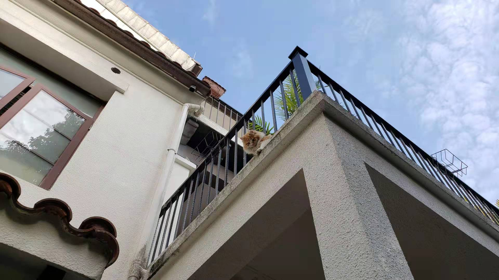
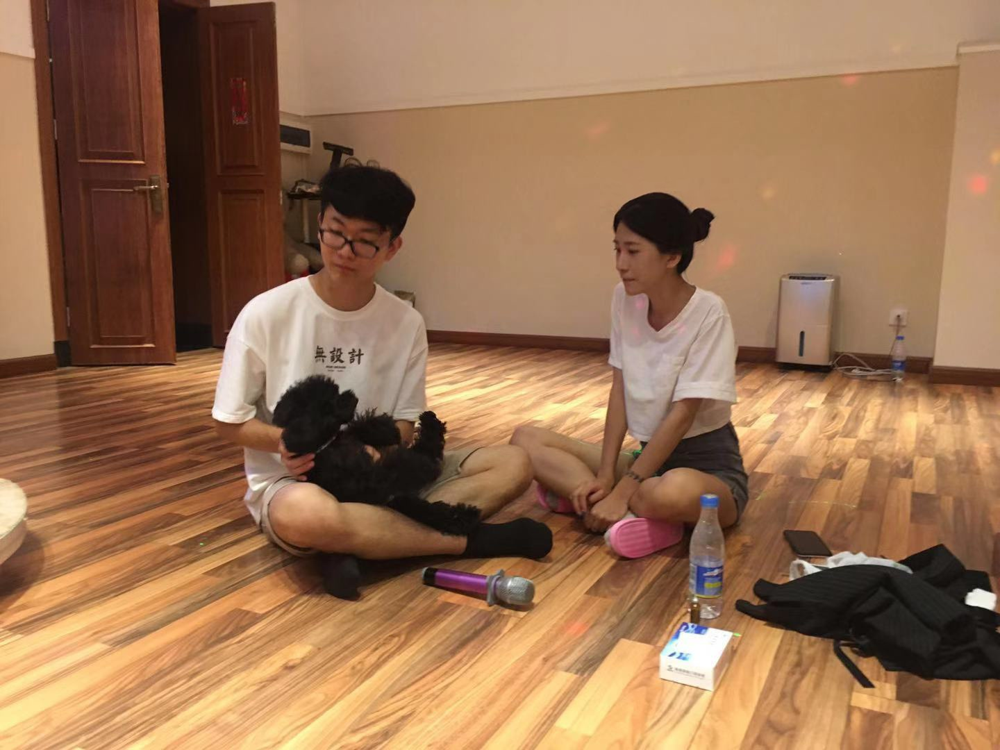
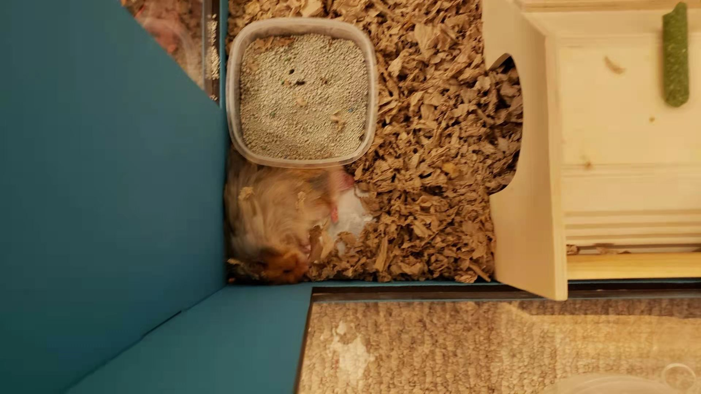
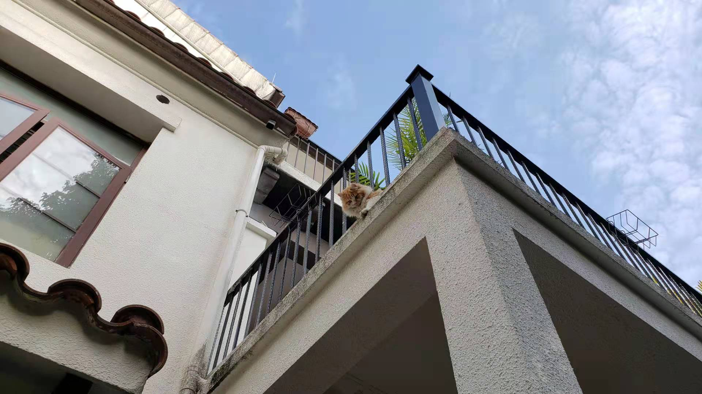
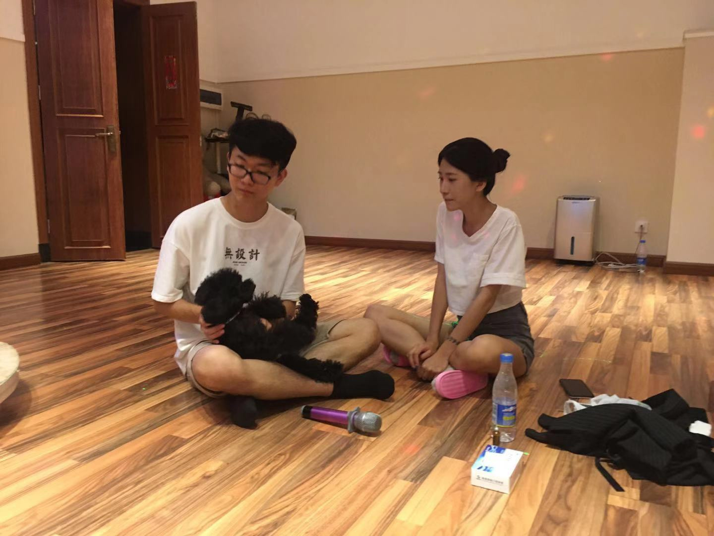
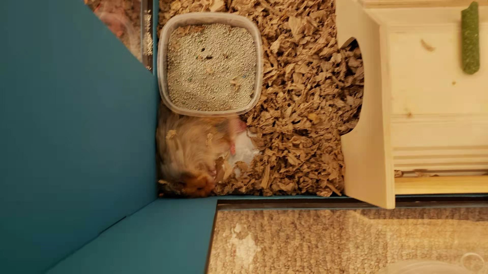
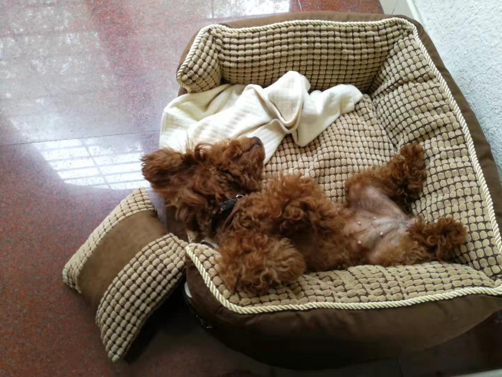
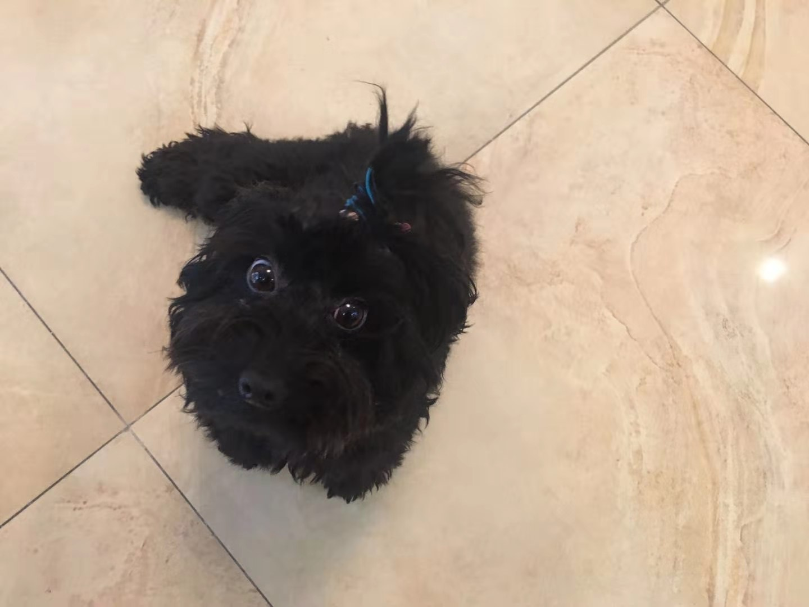
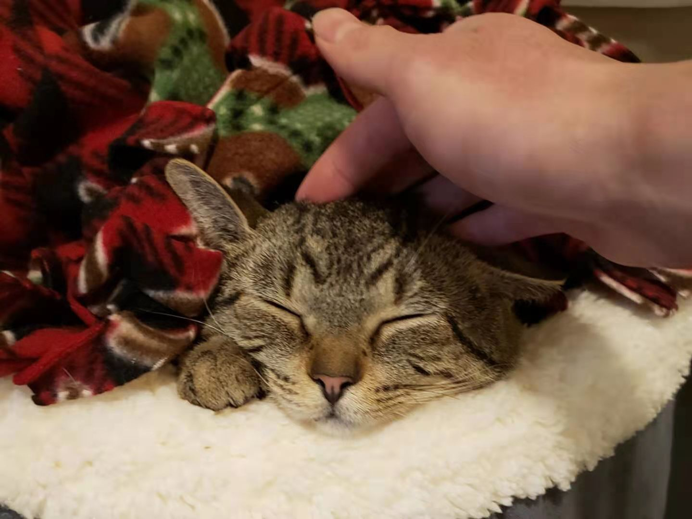

Time may flow away, but memory will stay
We Are Dogs
HuanHuan
Hi, my name is HuanHuan, and I am a brown color poodle dog. I am the first member in this little home since the year of 2013, which has been about 8 years till now
YouMi
Hi, my name is YouMi, and I am the second member in the little home after Huanhuan. I am a supper supper supper energetic girl, and love going out to run
I Am a Curious Cat
Fafa
I am Fafa, which mean being rich! I am adopted from the shelter in the beginning of the 2021 in the US. I was little nervous about the new environment at first, but I get very comfortable to where I live right now! I love to explore my surroundings, and I notice there is a little hamster lives near me. Wow, do not worry, I will not eat him! I am just curious to know what that is... wait, are you telling me that is a mouse..?
I Am a Hamster
ChaCha
Hey, I am Chacha! Please do not judge me by my size, I am actually a senior hamster, turning to 2 years old. And you know what, I may even be one of the few hamsters who ever take airplane! I came all the way from Los Angeles to Michigan, it was a long trip for me. Another crazy thing is there is a cat living near me! But...I do not even know what is a cat? Can I be the good friend with him by sharing my corns?
This is the site all about pets
@ All Rights Reserved by Little Home